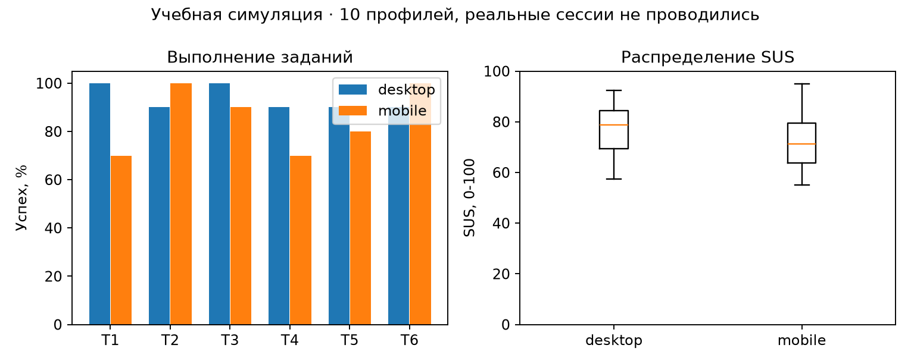

1 Цель и границы работы
Цель работы - проверить прототип GremlinDrive несколькими методами и сравнить варианты трёх форм. Использованы методические указания «ПЧМИ ЛабРабота6 2024-2025.pdf» из актуального задания №595 на учебном портале и прототип ЛР5.
Пользовательская часть выполнена как учебное моделирование: десять синтетических профилей S01-S10, а не реальные участники. Время заданий, ответы SUS, ожидания и карточная сортировка сгенерированы. Реальных сессий и записей пользователей нет. Отдельно проведена настоящая техническая и экспертная проверка прототипа во встроенном браузере. Эти два вида результатов не смешиваются.
Внешний сервис Treejack не запускался. Подготовлены дерево для импорта, задания и локальный инструмент tree.html; результаты data/tree_results.csv - симуляция теста дерева. Поэтому пункт методических указаний о проведении исследования непосредственно в Treejack остаётся невыполненным. Локальный инструмент не называется результатом Treejack.
2 План usability-тестирования
План для будущего исследования: дать участнику тестовую учётную запись и одинаковый набор файлов, попросить выполнять задачи без подсказок, затем заполнить SUS. На desktop используется мышь и клавиатура, на mobile - касания. Перед каждой задачей восстанавливается исходный набор. Фиксируются завершение, время, ошибки и оценка лёгкости SEQ от 1 до 7.
В моделировании один и тот же профиль представлен на обеих платформах. Время зависит от темпа профиля, сложности задачи и платформы; неудачная попытка обычно длиннее успешной. Это проектные допущения генератора. Они не являются наблюдениями за поведением людей и не позволяют оценивать реальные различия между платформами.
| Код | Задание | Критерий успеха |
|---|---|---|
| T1 | Войти с тестовыми реквизитами | Открыт список файлов |
| T2 | Создать папку «Новая_папка1» | Папка видна в списке |
| T3 | Найти файл «Макеты.png» | В выдаче остался нужный файл |
| T4 | Создать ссылку с паролем demo123456 на 7 дней | Показана ссылка и срок |
| T5 | Вернуть предварительно удалённый файл | Файл снова доступен в прежней папке |
| T6 | Найти прошлую версию отчёта | Открыта история версий |
Таймер для T1 запускается на готовом экране входа, для T2-T6 - на главном экране. Он останавливается при достижении критерия. Для реального исследования принят предел 120 секунд; после него попытка считается неуспешной. В синтетическом наборе нет цензурированных попыток с превышением этого предела. Время неуспешных попыток хранится, но не входит в медиану успешных.
3 Показатели производительности
Успех равен числу завершённых задач, делённому на число попыток. В каждой ячейке 10 попыток, поэтому один профиль меняет результат на 10 процентных пунктов. Медиана времени считается отдельно по успешным попыткам. Это позволяет не смешивать время выполнения с временем отказа.
| Задача | Desktop: успех | Время, с | Mobile: успех | Время, с |
|---|---|---|---|---|
| T1 | 10/10 | 18.1 | 7/10 | 21.5 |
| T2 | 9/10 | 27.1 | 10/10 | 30.2 |
| T3 | 10/10 | 21.4 | 9/10 | 28.3 |
| T4 | 9/10 | 37.8 | 7/10 | 56.0 |
| T5 | 9/10 | 36.2 | 8/10 | 49.9 |
| T6 | 9/10 | 31.2 | 10/10 | 36.5 |
Все значения таблицы - синтетические. Общие показатели приведены ниже; SEQ также смоделирован и не считается фактической удовлетворённостью пользователей.
| Платформа | Успех всех задач | Ошибки, сумма | SEQ, среднее |
|---|---|---|---|
| desktop | 56/60 | 29 | 5.43 |
| mobile | 51/60 | 28 | 5.08 |

Для обсуждения после задачи подготовлены вопросы: что мешало найти действие, какой результат ожидался, где потребовалось вернуться назад и что хотелось бы изменить в первую очередь. Ответы на открытые вопросы не выдумывались. В наборе нет фиктивных цитат или описаний наблюдений от имени участников.
4 SUS
Анкета содержит десять утверждений из методических указаний, с чередованием положительных и отрицательных формулировок. Ответы от 1 до 5. Нечётные пункты дают x-1, чётные - 5-x; сумма умножается на 2,5. Получается шкала 0-100, а не процент успешных действий. Русские формулировки приведены в QUESTIONNAIRES.md и служат рабочим переводом для учебного задания.
| Профиль | Desktop SUS | Mobile SUS |
|---|---|---|
| S01 | 92.5 | 95.0 |
| S02 | 75.0 | 72.5 |
| S03 | 57.5 | 60.0 |
| S04 | 85.0 | 70.0 |
| S05 | 60.0 | 67.5 |
| S06 | 92.5 | 95.0 |
| S07 | 67.5 | 62.5 |
| S08 | 82.5 | 80.0 |
| S09 | 77.5 | 77.5 |
| S10 | 80.0 | 55.0 |
| Платформа | Среднее | Минимум | Максимум |
|---|---|---|---|
| desktop | 77.0 | 57.5 | 92.5 |
| mobile | 73.5 | 55.0 | 95.0 |
Пример S01 desktop: вклады пунктов 4, 4, 3, 3, 4, 4, 3, 4, 4, 4. Сумма 37, итог 92.5. Независимый скрипт verify.py пересчитывает каждую строку. Синтетические средние не доказывают реальную удобность прототипа и не сравниваются с нормами как результаты полевого исследования.
5 Обратная карточная сортировка
Для офлайн-проверки подготовлено дерево разделов и четыре карточки: восстановить удалённое, открыть предыдущую версию, найти созданные ссылки, перейти к избранному. Участник должен положить карточку в ожидаемый раздел. Те же задания использует локальный tree.html. Дерево в data/tree-import.txt можно перенести в сервис тестирования дерева, но запуск сервиса в этой работе не проводился.
Успех означает выбор целевого узла. Прямой успех означает правильный выбор без возврата к корню и переходов в ошибочные ветви. В синтетической таблице direct не может быть больше success. Источник каждой строки указан как local_tree_simulation_not_Treejack.
| Задача | Desktop успех/прямо | Mobile успех/прямо |
|---|---|---|
| C1 | 10/10; 9/10 | 9/10; 7/10 |
| C2 | 10/10; 9/10 | 9/10; 6/10 |
| C3 | 10/10; 8/10 | 9/10; 6/10 |
| C4 | 9/10; 8/10 | 10/10; 9/10 |
В офлайн-варианте оценивается только попадание карточки в категорию. Для сравнения используется тот же смоделированный выбор узла; это повторная обработка набора, а не второе независимое исследование. Наиболее полезная гипотеза для будущей проверки - различают ли люди «Общий доступ» как список ссылок и «Поделиться» как действие над конкретным файлом. Ещё одна гипотеза касается истории версий внутри карточки файла.
6 Тестирование ожиданий
До показа результата участнику предлагаются четыре вопроса: что произойдёт после поиска, что откроет «Общий доступ», что можно увидеть в истории версий и куда вернётся файл после восстановления. Эталонные ответы заданы по поведению прототипа: фильтрация списка, список файлов со ссылками, список версий и прежняя папка соответственно.
В симуляции хранится только бинарное совпадение ожидаемого поведения с этим эталоном. Неверные текстовые ответы не создавались. Ниже количество совпадений из десяти; реальные ожидания могут отличаться.
| Элемент | Desktop | Mobile |
|---|---|---|
| E1 | 10 | 9 |
| E2 | 9 | 8 |
| E3 | 7 | 7 |
| E4 | 10 | 9 |
Чтобы сократить возможное расхождение, стоит подписать список как «Созданные ссылки», а в карточке файла явно показать «История версий». В подтверждении восстановления полезно показывать папку назначения. Эти предложения основаны на устройстве интерфейса и заданных гипотезах, а не на вымышленных высказываниях людей.
7 Экспертная проверка по контрольным спискам
Эта часть выполнена по настоящему прототипу. Пройденные сценарии проверены во встроенном браузере; программные свойства подтверждены чтением исходников. Чеклист не является полной сертификацией доступности.
| Версия | Пункт | Результат |
|---|---|---|
| Web | Вход ведёт к файлам | Пройдено в браузере |
| Web | Созданная папка появляется в списке | Пройдено в браузере |
| Web | Поиск оставляет подходящие имена | Пройдено в браузере |
| Web | Ссылка показывает выбранный срок | Пройдено в браузере |
| Web | Удаление требует подтверждения | Пройдено в браузере |
| Web | Корзина позволяет вернуть файл | Пройдено в браузере |
| Web | Версии доступны из имени файла | Пройдено в браузере |
| Web | Формы имеют label, required, minlength | Проверено по исходникам |
| Mobile | Есть нижняя навигация | Проверено на снимках пяти размеров |
| Mobile | Видны название и основные действия | Проверено на снимках |
| Mobile | Области основных действий от 44 px | Исправлено в CSS |
| Mobile | Нет тесных трёх колонок на 360 px | Исправлено: одна колонка |
| Обе | Диалог имеет закрытие и Escape | Нативный dialog; Escape проверен |
| Обе | Серверная авторизация и реальная передача | Вне границ демонстрационного прототипа |
| Обе | Работа со скринридером и физическим телефоном | Не проверялась |
Для основных пар палитры коэффициент контраста рассчитывается через относительную яркость sRGB: (Lсветл+0,05)/(Lтёмн+0,05). Подробный расчёт и значения сохранены в data/contrast.csv. Проверены основной и вторичный текст, белый текст на кнопке, текст на фоне и активная навигация. Проверка нескольких пар не покрывает каждую подпись и каждое состояние.
8 GOMS: три формы, два варианта, два метода ввода
Цели: войти в хранилище, создать папку и создать ссылку. Операторы: K - клавиша или нажатие кнопки мыши, P - наведение, H - перенос руки между мышью и клавиатурой, M - умственная подготовка. Из методических указаний взяты K=0,2 с, P=1,1 с, H=0,4 с, M=1,35 с. Время ответа системы R исключено: модели сравнивают локальное действие при одинаковом ответе системы.
Метод мыши: навести указатель, нажать поле, перенести руку для ввода, вернуться к мыши и подтвердить действие. В форме входа это повторяется для двух полей, поэтому H=4. Смешанный метод: открыть форму мышью, перейти к вводу, затем использовать Tab и Enter. Правило выбора: вариант B предпочтителен при известной пользователю задаче; вариант A оставлен как исходное решение с двумя промежуточными переходами. Варианты показаны в forms.html.
Для одинакового ввода приняты 36 символов входа (20 в почте student@example.test и 16 в пароле laboratory123456), 12 символов названия «Новая_папка1» и 10 символов пароля demo123456. Это тестовые значения модели. Пароль при входе в прототип можно менять; настоящие реквизиты не используются.
В A добавлены два P и два K на промежуточные переходы. M задаётся по группам принятия решения: вход и папка - 3 в A и 2 в B; ссылка - 4 в A и 2 в B. Это аналитическое допущение. Для ссылки смешанная стратегия включает два наведения и шесть служебных нажатий помимо символов пароля. Все итоги используют T=0,2K+1,1P+0,4H+1,35M.
| Форма | Вариант/ввод | Выражение | Время, с |
|---|---|---|---|
| Вход | A/mouse | 41K + 5P + 4H + 3M | 19.35 |
| Вход | A/mixed | 41K + 3P + 1H + 3M | 15.95 |
| Вход | B/mouse | 39K + 3P + 4H + 2M | 15.4 |
| Вход | B/mixed | 39K + 1P + 1H + 2M | 12.0 |
| Новая папка | A/mouse | 17K + 5P + 2H + 3M | 13.75 |
| Новая папка | A/mixed | 16K + 3P + 1H + 3M | 10.95 |
| Новая папка | B/mouse | 15K + 3P + 2H + 2M | 9.8 |
| Новая папка | B/mixed | 14K + 1P + 1H + 2M | 7.0 |
| Ссылка с паролем | A/mouse | 17K + 7P + 2H + 4M | 17.3 |
| Ссылка с паролем | A/mixed | 18K + 4P + 1H + 4M | 13.8 |
| Ссылка с паролем | B/mouse | 15K + 5P + 2H + 2M | 12.0 |
| Ссылка с паролем | B/mixed | 16K + 2P + 1H + 2M | 8.5 |
Получены все 12 моделей. Выигрыш B заложен сокращением переходов и числа решений, поэтому результат не следует трактовать как эмпирическое доказательство. На реальном интерфейсе его надо проверить на выполнении задачи и числе ошибок. KLM здесь оценивает обученного пользователя без ошибок, тогда как синтетические task time выше из-за поиска и неопределённости.
9 Мобильная KLM-модель
Для телефона использована адаптация KLM с T - касанием, K - вводом символа и M - подготовкой. Принято T=K=0,2 с как явное допущение модели, а не измеренная скорость касания. Свайпы, сетевой ответ, подсказки и исправление ошибок в эти три простые формы не включены. Отсчёт начинается с доступного действия открытия формы.
| Форма | K / T / M | Оценка, с |
|---|---|---|
| Вход | 36 / 3 / 2 | 10.5 |
| Новая папка | 12 / 3 / 2 | 5.7 |
| Ссылка с паролем | 10 / 5 / 2 | 5.7 |
Формула: 0,2×(K+T)+1,35×M. Если принять касание равным 0,4 с, каждая оценка увеличится на 0,2×T; это показывает чувствительность результата к допущению. Модель пригодна для сравнения числа действий, но не заменяет измерение времени на реальном телефоне.
10 Рекомендации и результат
В первую очередь следует сделать подписи общего доступа и истории версий более явными, затем проверить их на реальных задачах. Для длинного списка пригодятся сортировка и путь к папке назначения при восстановлении. Небольшие подписи и работа диалогов требуют проверки на физическом телефоне со скринридером и увеличенным шрифтом.
Техническая проверка помогла исправить мобильную сетку и размеры действий. Подготовлены инструменты исследования, синтетические таблицы производительности и SUS, модель карточной сортировки и ожиданий, 12 GOMS-расчётов и три мобильные модели. Числа открыты и пересчитываются. Ограничения: нет реальных участников, физического мобильного теста и запуска Treejack. Следующим этапом должно стать фактическое исследование по приложенному протоколу.
11 Воспроизводимость
Данные: data/performance.csv, sus.csv, tree_results.csv, expectancy.csv, goms.csv, mobile_klm.csv и PROVENANCE.json. Генератор: ../lab5/scripts/model_study.py. Проверка: python3 scripts/verify.py. Проверяющий скрипт независимо пересчитывает SUS, средние, медианы, успех и обе операторные модели. Поле data_origin не позволяет спутать синтетический набор с фактическим исследованием.
Источники
ПЧМИ ЛабРабота6 2024-2025.pdf. Методические указания из задания №595: https://edufpmi.bsu.by/mod/assign/view.php?id=595 Константы KLM и методика SUS взяты из этого файла.
ПЧМИ ЛабРабота5 2024-2025.pdf; исходники и отчёт ЛР5 GremlinDrive.
W3C. Understanding SC 1.4.3: Contrast (Minimum). https://www.w3.org/WAI/WCAG22/Understanding/contrast-minimum.html Дата обращения: 24.10.2026.